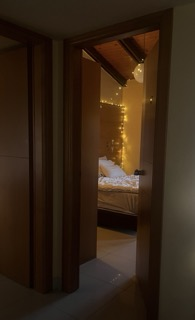
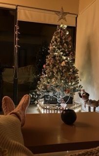
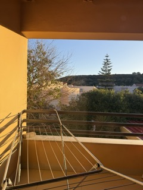

Asuminen, päivittäinen rytmi ja tavat
Kreikassa asuminen tarjoaa ainutlaatuisia kokemuksia, jotka eroavat monin tavoin Suomen arjesta. Esimerkiksi asumis- ja elinkustannukset ovat usein alhaisemmat, sekä perhekeskeisyys ja yhteisöllisyys korostuvat arjessa. Asuin alueet voivat vaihdella tyyliltään ja tunnelmaltaan. Oma asuntoni oli suurehko kaksio (n. 48 neliötä) meren läheisyydessä, josta oli kävelymatka paikallisiin palveluihin ja julkisen liikenteen pysäkille. Vuokra-asunto saatiin työpaikan yhteistyön kautta ja vuokramaksu oli 300 euroa kuukaudessa.



Kreikassa pidetään edelleen hyvin normaalina asumismuotona isommissa perheissä asumista. Monet sukupolvet asuvat saman katon alla tai lähellä toisiaan. Perheiden kesken myös juhlitaan pieniäkin saavutuksia ja kutsutaan kaukaisempiakin sukulaisia mukaan. Kreikan saarilla korostuu perhekeskeisyys vahvasti perheyritysten myötä.
Kreetan saarella liikkuminen onnistuu sujuvasti julkisen liikenteena avulla tai omalla ajoneuvolla. Saarella suuressa suosiossa ovat mopot ja skootterit. Myös tärkeimmät palvelut kuten ruokakaupat ja apteekit ovat sijoitettu lähelle asuinalueita. On kuitenkin huomioitava, että vain pienimmät kioskit ovat auki iltaisin ja öisin, muiden liikkeiden ja palveluiden ollessa suljettuna.
Päivittäisen rytmin avulla omaan arkeen asettui tiettyjä maisemia ja tapoja. Alla olevissa kuvissa näkyy arkiset lempi näkymäni: